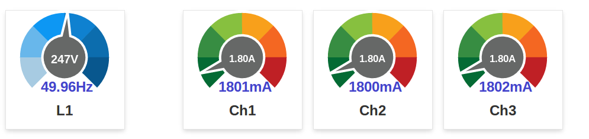

Hi there,
I am using a modified OEM energy monitoring hardware since more than a year now, with one voltage sensor and three CTs for the current measurement of the three mains phases. This system logs via the RFM12 and a Jeelink USB dongle to Emoncms on a Windows Home Server. This setup is running very reliably with an accuracy of better than ~4% compared to my power meter. I think it would be possible to get better accuracy by using individual voltage sensors on all phases.
In Germany the majority of household have three phase supply. To be able to use three voltage senors it would be necessary to have three outlets within the distribution (for non-invasive mounting). I have never seen that. This means that you have to ask a friendly electrician to install these outlets. But then the whole thing is not really 'non-invasive' any more (and the OEM solutions becomes quite complex with a lot of cabling). This is a dilemma which is hard to solve.
So I came to another solution which is quite simple and uses mostly ready-made components:
I am using Chinese 3-phase energy monitors since some time for professional purposes (PV-Systems with battery storage). A very nice unit of this type is the Eastron SDM630M. This device has integrated shunts for current measurement, a nice little display and an RS485 interface for data readout with Modbus protocol. A lot of measuring values can be read, including imported and exported energy, phase voltages, currents, frequency, reactive power and so on. Parameters for the RS485 can also be set via four small keys and the display.
For data storage and visualization I decided use the new Emoncms 'low-write' version on a Raspberry Pi. This was installed according to the installation instructions and worked 'out-of-the-box'. The only thing missing on the RasbPi for direct connection to the SDM630 is an RS485 interface.
To be able to use the already existing software for data collection on the RasPi (Emonhub), I simply made a 'clone' of the RFM12Pi module. This now has an RS485 driver onboard instead of the RFM12 RF transceiver. Software on the RS485Pi board is the Opti-bootloader (same as on RFM12Pi) for Arduino compatibility and a small sketch for data readout via modbus. As the only available hardware UART is already used for communication with the RasbPi I had to use a software serial for the RS485 interface. (The 'ModbusMasterSoft' library I use is a dirty hack of the existing ModbusMaster library and the AltSoftSerial library. I found no decent way to make these two work together, so I had to modify them)
So the whole installation now consists of:
- a Raspberry Pi with power supply and the RS485Pi interface board
- the SDM630 energy meter
(- and a cable in between :-))
I (try to) attach the schematic drawing of the RS485Pi board (I am not using Eagle, sorry), the sketch for the RS485Pi board and some pictures. I am not totally sure if I am allowed to publish my hacked version of the two libraries but I just try.
BR, Jörg.
PS: I have 9 empty pcbs left of the RS485Pi. Please ask if interested.
UPDATE 14.07.2015: to get rid of my extra (proprietary) hardware, I have written a small Python script which talks to the SDM630 via a cheap, chinese USB-RS485 adapter now. Give me a PN if you need any details. (thanks for the help, Yves!)
Re: Simple invasive 3-phase energy monitor
Jörg,
I'm very interested in those pcbs. Nice idea. I did actually get a quote for a three phase meter from Shenzhen Star Instrument but they quoted $10000 just for the 'Data Acquisition System' part so I didn't proceed.
The din rail mounted unit you are using looks really neat.
Thanks for taking the time to post the information ; what is the resistor just over the meter in the photo?
Eamonn
Re: Simple invasive 3-phase energy monitor
Eamonn,
I can buy this unit here in Germany for €87. This is not a bad price.
The resistor you mention is the 120 ohm termination resistor for the RS485 bus. It has to be mounted externally on the 'last' unit of the bus. You can actually use more than one SDM630 on the bus because the Modbus address is selectable.
The blue current clamps are from the 'old' OEM system which is still used in parallel.
Please send a personal message with your address so that I can send a pcb or two.
BR, Jörg.
Re: Simple invasive 3-phase energy monitor
How accurate is this unit? Is it comparable to the ABB B23 312-100 ?
Where did you get it in Germany? Is there a webshop?
Re: Simple invasive 3-phase energy monitor
Should be available on your local ebay.
German webshop is:
http://bg-etech.de/os/product_info.php?products_id=50
BR, Jörg.
PS: I am not able to attach the manual. Accuracy is Class 1.
Re: Simple invasive 3-phase energy monitor
Free shipping direct from China on this item $95 = £59 = £74
http://www.aliexpress.com/item/SDM630-DC-Mutli-Function-Four-Module-Thre...
I like the look of these units - do they have a single phase model or can you simple ignore the inputs for the other 2 phases?
Re: Simple invasive 3-phase energy monitor
I just bought a house, so I might install this one in the new fuse box. Need to redo all the electricity in this house :-).
What's the update rate? I saw it works on 9600 baud. Can it provide instant readings? If I read the code well, it's a 1 Hz update rate.
Re: Simple invasive 3-phase energy monitor
Free shipping direct from China on this item $95 = £59 = £74
(€74?) Directly from Eastron I got a quote for 10-50 pieces of about €60-65, but this is without any additional bank and customs charges. Not really a valid alternative.
You can use the unit as a single phase meter, but there are much cheaper alternatives (e.g. DRS110M, not with exactly the same protocol, but also RS485).
Re: Simple invasive 3-phase energy monitor
If I read the code well, it's a 1 Hz update rate.
I chose 1 Hz just because it 'felt right'. Much faster readout is probably not possible because of the protocol overhead, baud rate setting and the software emulation of the serial interface. And not necessary too.
What I found is, that the voltage values change only every 5 or 6 seconds, so it seems they are internally averaged already. The power and current values change at least every second, I did not try to read any faster.
Edit: I just tested it. Power values are updated every second, voltage values every 6 seconds. Readout of one single value takes roughly 30ms, readout of 9 values about 80ms (@9600 baud).
Re: Simple invasive 3-phase energy monitor
Hi Jörg
it seems, others in central europe fighted the same 3 phase-'war', i had ;-) but with slightly different solution.
I got a solar generator installed this summer and for measurement, they installed me 2 Schneider Electric Energy Meters (with modbus onboard). I took an rs485 USB-Adapter from conrad and the minimalmodbus python library to read out the values from the pi. (was not completely pain-less; but works quit fine now)
Regards Yves
Re: Simple invasive 3-phase energy monitor
Hi Yves,
nice to hear about your solution. Schneider sounds expensive :-))
My point was that I wanted to be able to use the 'standard' ('low-write') SD-card image for Emoncms on the Raspberry Pi without any modifications and this was the reason why I decided to 'clone' the RFM12Pi to get a 100% compatible RS485 board.
So, your solution uses readily available hardware with a 'non-standard' software and my solution uses proprietary hardware with standard software. As I am more a hardware guy, this choice was obvious for me. I have very little experience with Linux and also with the Python, PHP, ... stuff.
BR, Jörg.
Re: Simple invasive 3-phase energy monitor
Hi Jörg
@ expensive; You may be right, compared to the chinese meter. But here in Switzerland, it is one of the cheaper in the row of certificated meters. The price was a bit below 200 Euros.
@ hardware; I understand. Bud i had only the pi (near the electric installation) and no rf parts around. So, it seemed to be 'right' to tinker a little bit of software to send the data to emon...
Regards Yves
[Multiple duplicate posts deleted. Moderator - RW][Thanks Yves]
Re: Simple invasive 3-phase energy monitor
Hello everyone!
As Jörg Becker I'm lucky to retrieve values from an electrical meter class MID (ENERDIS ULYS MD80 ULYSCOM MODBUS RS485-M +), I know it is not the cheapest ...
With an Arduino Mega 2560 and an ethernet shield + SD + RTC can do dataloggers locally with a nice CSV file.
I'm finalizing the transfer of data from Arduino to Emoncms but I have a doubt about the final format.
With the Arduino's ethernetserver I can send strings like this:
GET/api/post?apikey=Myverylongerapikey&node=0&json={Voltage:236548,Current:14785,Power-Factor:78548,Active-Power:485250}
It seems to work very well, but ...
I'm using the float but I do not know if I should send KW or W, kWh or Wh, A or mA?
I'm reading in imputAPIhelp but does not help me ;-)
Re: Simple invasive 3-phase energy monitor
What physical quantities you send depends on what information you want to send!
1 kW = 1000 W.
A Watt is a measure of power (not necessarily electrical even). If you send W, the numbers are 1000 times bigger but you get that much more detail.
1 kWh = 1000 Wh
A Watt.hour is a measure of energy, the power over a given time. This is the unit that measures the energy that you pay for.
1 mA = 0.001 A.
It is the current drawn by (or maybe generated by) a device or appliance. It is meaningful in terms of the capacity of the wiring in your house, but it is not meaningful in terms of power or energy. If you need to know if a fuse is likely to rupture or a breaker trip, this will help you.
So you need to decide what you want to know from your system.
Re: Simple invasive 3-phase energy monitor
Thanks for the clarification Robert,
I have no problem to know what is an KW or a W,
my problem is more precisely about how to bring up the comma and two decimal places in the data that I send ...
Currently I send 234568 mV and I would like to see 234,568V
I think it's more a problem of my code with Arduino ...
Re: Simple invasive 3-phase energy monitor
I see now. Your question was less than clear.
I think you say you are sending a floating point number. But first some history. The original emonCMS could only accept integer values, therefore it was standard practice to send 23456 for the voltage (within the range -32768 - +32767) and multiply by 0.01 inside emonCMS to get the correct voltage - 234.56 V. If you are sending a floating point value, then there is no real difference between sending 234568 in mV, then multiplying by 0.001 at the receiving end, or multiplying by 0.001 at the sending end and sending 234.568 in V. If you have the value in mV in an integer and want to send the value in V with a decimal, then you multiply mV by 0.001 and store the number in a float. How many decimal places is a function of the display at the receiving end, it has nothing to do with the sending end. If you are printing the value with a decimal, then you need to look at the Arduino Help to see the details of the Serial.print command to control the number of decimal places. From the Arduino Help:
Serial.println(1.23456, 0) gives "1"
Serial.println(1.23456, 2) gives "1.23"
Serial.println(1.23456, 4) gives "1.2346"
But beware, there might be a problem with the decimal separator. In the UK, we use '.' whereas I see you use ','. If the system expects ',' to separate the values, then you have a problem.
[Edited to add detail.]
Re: Simple invasive 3-phase energy monitor
Thanks Robert,
I saw some code and now I have this on the Arduino serial monitor:
Connecting...
228.88
3.18
64.58
696.99
50.01
54.19
HTTP/1.1 200 OK
Date: Tue, 16 Dec 2014 18:33:01 GMT
Server: Apache/2.2.22 (Ubuntu)
X-Powered-By: PHP/5.3.10-1ubuntu3.15
Content-Length: 2
Connection: close
Content-Type: application/json
ok
Disconnecting...
The code I have rewritten is:
//Create Data to Emoncms.org
Voltage = (Compact2Word(12,readRegs1))/1000.0;
Current = (Compact2Word(22,readRegs1))/1000.0;
PowerFactor = readRegs1[27]/1000.0;
ActivePower = Compact3Word(6,readRegs2)/1000.0;
Frequency = readRegs2[33]/1000.0;
ActiveEnergy = (Compact3Word(9,readRegs3))/10000.0;
//send values
sendData();
Serial.println(Voltage);
Serial.println(Current);
Serial.println(PowerFactor);
Serial.println(ActivePower);
Serial.println(Frequency);
Serial.println(ActiveEnergy);
}
and this for sending to the Server:
void sendData() {
// if there's a successful connection:
if (client.connect(emoncms, 80)) {
Serial.println("Connecting...");
// send the HTTP GET request:
client.print("GET /api/post?apikey="); // GET /api/post?apikey=Myapikey&node=0&json={Voltage:236548,Current:14785,Power-Factor:78548,Active-Power:485250}
client.print(apikey);
if (node > 0) {
client.print("&node=");
client.print(node);
}
client.print("&json={Voltage:");
client.print(Voltage, 2);
client.print(",Current:");
client.print(Current, 2);
client.print(",Power-Factor:");
client.print(PowerFactor, 2);
client.print(",Active-Power:");
client.print(ActivePower, 2);
client.print(",Frequency:");
client.print(Frequency, 2);
client.print(",Active-Energy:");
client.print(ActiveEnergy, 2);
client.println("} HTTP/1.1");
client.println("Host:emoncms.org");
client.println("User-Agent: Arduino-ethernet");
client.println("Connection: close");
client.println();
// note the time that the connection was made:
lastConnectionTime = millis();
}
else {
// if you couldn't make a connection:
Serial.println("Connection failed");
Serial.println("Disconnecting...");
client.stop();
}
}
But in the page of Imputs of Emoncms I have that!
See the image attached... Mistery...
Re: Simple invasive 3-phase energy monitor
Are you saying that the numbers that you see on the local terminal do not agree with the numbers showing in emonCMS? Are you sure they should be the same? The numbers I would expect not to change much - voltage and frequency - have indeed not changed. If conditions changed, you can expect to see different values. While you are debugging, you would find it easier to replace the real data with artificial data that does not change, then you can check that the correct numbers are being transferred.
Re: Simple invasive 3-phase energy monitor
Thanks Robert,
when I saved the image inputs page values had changed slightly but this is not the problem.
If you see well the voltage has not recovered decimal numbers after the decimal point, same thing for the active power ...
The remaining values are consistent and fair.
How so?
Re: Simple invasive 3-phase energy monitor
It does the same for me (always a maximum of 3 digits) and I cannot explain that. It needs someone who knows emonCMS better.
Re: Simple invasive 3-phase energy monitor
I think you'll find it's just rounding in the webpage rendering. From memory I think you get 2 decimal places below 10 and 1 up to 100 and just whole numbers beyond that. It applies to both the input and the feed pages.
I see all your inputs are logged to a feed, it you get the feed number from the feeds page and use this url in your browser (while logged in or add apikey) you should get the current unrounded value returned.
The data is good to (again from memory) 14 digits of precision.
Paul
Re: Simple invasive 3-phase energy monitor
One trick I use when I want to see the extra precision is to display the feed value under the dial:

Re: Simple invasive 3-phase energy monitor
Tank you Paul,
as I understand it, when i'm logged in, copy and paste the link and surprise ... FALSE!
Its so normal? :-)
My browser is chrome ... this is the problem?
Re: Simple invasive 3-phase energy monitor
Yes it's normal if you haven't edited the link for your own feedid, Chrome is fine, that's what I use too.
You will need to add the feed id number of the feed in question, in my post I used "12345" as an example and when you click the link it will open a page and return false because there is no feed id number
add the feedid you wish to look up to the end and enter............or
If you are not logged in you should also add
and add you 32 digit api key to the end of that so you end up with
replacing the bold text with your own feed id and apikey..
This was just suggested to show that your data was retaining the precision although displayed differently on the input page, dBC's suggestion above also demonstrates the point well.
Re: Simple invasive 3-phase energy monitor
Thank You pb66!
I could check and actually the accuracy is maintained.
If the voltage I recovered "227.88"
Too bad that the display on the input / view is reduced ...
Thank you all!
Simone
Re: Simple invasive 3-phase energy monitor
Jorg,
your idea with SDM630DC and MODBUS Master library is great. Im working on it, but I got stuck. Im trying to use Jeenode with RFM12 instead of your plug, as my Raspi is too far from SDM630 to use your way. Jeenode is equal (almost) to UNO, but with limited group of Digital IO pins available (just D4,5,6,7). Your AltSoftSerial library has fixed communication pins 8,9,10 used for UNO based systems. I tried to redefine them, but I failed. Another option for me is to use hardware serial pins 0 and 1 as RFM12 comunicates via SPI and Serial 0 is unused in my project (except of image upload phase). But If Im using regular Modbus Master library, I get error during compilation in Arduino IDE (version 1.6) and I found info, that this library is not supported more. Do you have any idea how continue with my project. Im using Jeenodes with RFM12 for may other monitoring tasks and that would be really great to use it as SDM630 monitorig node too.
Radek
Re: Simple invasive 3-phase energy monitor
Radek,
if you have a free hardware serial, please use that. It will probably give less trouble. Although I was surprised to see that 'my' solution of combining AltSoftSerial and Modbus library works nearly perfectly. And it gave me more control over switching of the RS485 enable. This clearly has to be adapted when using the hardware serial.
My system is now running since >5 months without a single problem. Although compared to the published version of the sketch, I have added some 'failsafe' code. When switching 'nasty' loads, I sometimes got 'hang-ups' of the RS485. This is now solved by simply resetting the communication after failing for some seconds. And then the number of successful communication cycles is counted and then used in the averaging (instead of a fixed divisor).
Hmm, which RS485 hardware (driver chip) are you using with the Jeenodes? I have some jeenodes lying around and could test a similar system. If you want me to check your code, send me a PM. I will try to find the reason for the compilation problems.
BR, Jörg.
PS: and thanks for coming back to the original subject of this thread ...... :-))
Re: Simple invasive 3-phase energy monitor
At this moment Im using standard Arduino RS485 shield with MAX481 chip from Sparkun, as there is easy to play with wiring changes (I have prepared MAX487 chip for final solution). When I use this shield with Arduino UNO and with your sketch, everything works great (except I have to rewire TX and RX pins from standard 0 and 1 to 8 and 9 according to AltSoftSerial library). What is interesting, it works even in direction pin 10 is not used.
The issue is to use pins, which are available on Jeenodes. There are 4,5,6,7 and 14,15,16,17 pins available at I/O ports and standard hardware TX/RX pins available at FTDI connector. I didnt find way, how to modify AltSoftSerial library to communicate via one of available pins. So I tried to replace ModbusMasterSoft library in your sketch by standard ModbusMaster library (which is, I hope, using standard hardware TX/RX pins). And I got complex compilation error message, see attach. Im also attaching your sketch modified for usage of ModbusMaster library and that Modbusmaster library itself to check, whether Im using the correct one. Im using Arduino IDE 1.6.
Your any hint is more than welcome...
Re: Simple invasive 3-phase energy monitor
Yes, they are using an unconventional way to enable the driver only for the 'active' bits during transmission.
I also had problems with the original Modbus Master library and specifying the serial port as a parameter. This is the reason why I 'hard-coded' this in the end.
I think the way to go is to try to get the original sketch going on the Jeenode. No idea atm why it is working for you on a UNO, but not on a Jeenode!?! Have to test this myself.
Jörg.
Re: Simple invasive 3-phase energy monitor
Radek,
I have just tried to use my original sketch (the one I just sent an hour ago) on the Jeenode and it seems to work! The 'pins' 8 and 9 which are used for RX and TX by the AltSoftSerial library can be found on the Jeenode on the extension of the SPI header (pins 7 and 8). I have just connected these two pins to the RS485 shield (+ PWR and GND off course) and it happily sends out the Modbus requests on the RS485. I cannot test reception as I do not want to disconnect my SDM630 from my system.
Please try and come back.
Jörg.
Re: Simple invasive 3-phase energy monitor
Sounds promissing, Jorg !!! Im just playing with my system, so Im going to test your idea and get back to you with results. Stay tuned.
Re: Simple invasive 3-phase energy monitor
I just tested it. Good news is, this RX/TX pair at Jeenode really exist. Flashing TX ad RX diodes at RS485 are shoving, that communication between sheet and SDM630 works. Also handset symbol at SDM630 display says, it communicates to each other. Bad news is, serial monitor shows just repeating "SDM630 testing..." message, but no any values coming from SDM630.
I found at Jeenode schema, that PB0 and PB1 (pins 8 and 9) are unused by jeenode itself, but PB2 (pin 10), used as a timer in AltSoftSerial library, is used by Jeenode as a SEL pin for RFM12 module. Couldnt it be a problem?
Re: Simple invasive 3-phase energy monitor
I don't think pin 10 is a problem, as the AltSoftSerial description says that this pin can be used as a digital I/O (SEL function for RFM12B) without problems. Only the PWM function on this pin is lost because AltSoftSerial uses Timer2.
Are you powering the RS485 shield with 5V or with 3.3V? The Atmel on a Jeenode works with 3.3V. I do not know if the RS485 shield is happy with this voltage because the MAX481 is a 5V device. But signals do look quite good.
I can only see some spikes on the RX line. This could be due to the mentioned 'unconventional' use of the Enable pins.
Sorry that I cannot test with the SDM630, but it is now 'buried' in my distribution. No chance to get at it without a lot of work.
Jörg.
Re: Simple invasive 3-phase energy monitor
Jorg,
I understand for sure you cannot dismount your SDM630 from your live system. I have the same situation, so I bought another SDM630 for testing and development purposes.
As Im still not successful with Jeenode, I made interesting experiment. I moved whole setup (shield, wiring and sw sketch) from Jeenode to standard UNO board. And it works with pins 8 and 9. What is strange, results delivered but serial monitor:
SDM630M Test Program 24.09.2014
8
10 0 0 0 0 0 0 61 9 0 0 0 0 0 0 0 0
3
10 237 0 0 0 0 0 0 0 0 0 0 0 0 0 0 0
1
10 237 0 0 0 0 0 0 0 0 0 0 0 0 0 0 0
2
10 237 0 0 0 0 0 0 0 0 0 0 0 0 0 0 0
That value 237 is correct. But what is meaning of those single values at each second row? Does it mean, that only 1-3 successful reading from 10 in each series? If so, there si probably some problem with signal readings. Or am I wrong?
Radek
Re: Simple invasive 3-phase energy monitor
Yes, the single value is the number of successful complete readouts (voltage + power).
I found a way to run the RS485 from the SDM630 to my desktop (the old cable was still lying there:-)) With the jeenode I can see that the correct values are read from the bus, but there seems to be a problem somewhere with extra bytes read or something like that.
I have a feeling that the problems come from the unconventional way of controlling the enable pins (I see a lot of glitches on the scope) or the wrong voltage level.
Jörg.
PS: Bad weekend for debugging, today is my wives birthday, tomorrow my sons and an monday my own! So I am quite busy with other things :-)
PPS: do you use a termination resistor on the SDM630 side?
Re: Simple invasive 3-phase energy monitor
"my wives birthday"
I'm sure you didn't mean that, Jörg. "wives" is the plural, you meant "wife's" - belonging to one wife. ;-)
Anyway, Happy Birthday to them and to you.
Re: Simple invasive 3-phase energy monitor
Haha, that would have been even harder .... :-))) (and illegal!).
I had written 'wifes' originally and then thoughtlessly used the correction function.
Thank you! Jörg.
Re: Simple invasive 3-phase energy monitor
Radek,
I just tried to 'bypass' the 'unconventional' enable method of the RS485 shield. Modified the ModbusMasterSoft.cpp to use pin 4 instead of pin 10 for Enable and connected that Jeenode pin to pins 2 and 3 of the Max (after removing the MOSFET). Works immediately!
So this is a problem of the RS485 shield. If you do your own hardware you can easily fix this like just said.
BR, Jörg.
PS: I knew why I did not like the way they use the Enable .....
Re: Simple invasive 3-phase energy monitor
Jorg,
first of all, enjoy celebrating weekend with all of your wives :-).
Just to let you know, I probably found a solution, how to read data from SDM into Jeenode reliable way and to forward them via RFM12 into EMONCMS. Im using hardware TX and RX pins and D7 at port 4 as a direction pin. Voltage is not a problem, RS485 shield is powered by 3,3 V from Jeenode and there are no dropouts in value readings. Im no using Modbus Master Soft/AltSoftSerial library, but SimpleModbusMaster Library instead. It is very early prototype level yet, but it works! Im going to write simple sketch based on your original testing sketch to have unified platform. I will keep you informed. Stay tuned.
Happy birthday to you and to whole your family.
Radek
Re: Simple invasive 3-phase energy monitor
:-)) One is (sometimes more than) enough for me ....
So you found the same solution to directly control the enable. This seems to be the only reliable solution. The nice thing with using a soft serial for RS485 is that you have the original hardware serial (via USB) free for debugging.
And thanks for your birthday greetings!
Jörg.
Re: Simple invasive 3-phase energy monitor
I didnt modified RS485 shield and in final setup there is direction control pin unused. Just four wires between Jeenode and RS485 shield. TX, RX, 3.3V, Ground. It works without any problems.
Yes, you are right, it si nice to have FTDI port with TX and RX pins free for debuging and you havent to disconnect RX pin during each sketch upload. But final sketch is very elementar. You can see in attach example reading Voltage1 and Frequency and forwarding it to EMONCMS via RFM12.
Re: Simple invasive 3-phase energy monitor
Hello to all of you,
I am really interested in your project and it is very good that you share your experience and knowledge with us. I would like to make a data logging and displaying Raspberry or Windows server taking data from a Siemens energy analyzer which has a modbus through Ethernet to send data.
Can you give me your thoughts or very initial guidelines how to set this system up and if there is any ready made software for my application?
[Duplicate post deleted. Moderator (RW)]
Re: Simple invasive 3-phase energy monitor
Hi Angelo,
my setup is based on energy meter SDM630DM, which is available for very affordable price (under $100) at Aliexpres, communicating via MODBUS RTU @ RS 485 to Jeenode from Jeelabs, which is forwarding data to Emonhub running on Raspi and then to EMONCMS as final data logger and processor. Processed data are then available for presentation level at any third party web pages via very simple JSON commands or directly in EMONCMS Dashboards. It means, this is a real end to end solution. Besides of Arduino sketch, which is tailor made for this energy meter, all other chain parts are standard modules of Open energy monitor.
Radek
Re: Simple invasive 3-phase energy monitor
Hi Radek,
thank you for your reply. I understand your setup but the thing is that I want to make a data-logging solution with the current energy analyzers that are already installed in various installations. Also the good thing with Modbus over TCP is that it can be connected to switches and get the data from a longer distance.
Since I have the equipment I would like 1-2 guidelines in order to begin and then to proceed.
Angelo
Re: Simple invasive 3-phase energy monitor
I have just updated my installation. Instead of using my own proprietary 'RS485_Pi' hardware, I have now changed to a cheap chinese USB-RS485 adapter (with CH340 chip). Cost is around 5€ on ebay and the unit works without any need to load drivers on the Raspberry Pi.
To read out data from the SDM630 I have now done a little Python script, which is automatically started after boot-up (Yves, thanks for the help!). I am not very familiar with Python, so the script can for sure be improved. But it is working ok for me atm.
BR, Jörg.
PS: had to rename the Python script to .txt to be able to upload.
Edit - munged API key in attachment for security - BT
Re: Simple invasive 3-phase energy monitor
Good idea, Jorg, that RS485/USB adapter. I will try it too.
My current effort is to eliminate Raspberry at all as a basestation. For monitoring of a few (up to some 10) temperatures Im just now testing great device ESP 01 with ESP8266 chip, which is forwarding data directly to EMONCMS in cloud via Wifi (combination of ESP01 and DS18B20). Thats really great piece of HW of a new IoT generation. Next step will be to mount ESP05 (variant of ESP01) directly to A/B connection of SDM630 and to forward measured data also to EMONCMS by this shortcut. Only limitation I see now with ESP8266 chip is, there is no A/D, so no analog input. But for reading local digital data and forwarding them to cloud, is is a great chip.
Re: Simple invasive 3-phase energy monitor
/offtopic start
I am also working with the ESP8266, great chip indeed! But I am just starting. One big problem for me atm is the high power consumption. It just means that a 'real' power supply is needed, as is a PCB then and .....
And the ESP8266 has an AD input, but this is possibly not connected to a pin of the ESP01. I am using the ESP03.
I would prefer to use an external ADC (12-Bit MCP3208 or 16/18-Bit MCP342x) which could be easily connected via a (bit-banged) SPI or I²C.
/offtopic stop :-))
I wanted to use a readily available USB-RS485 now on the Raspberry Pi as for most users it is much easier to buy something than to build it (I had some requests for my RS485Pi hardware and could only send the remaining PCBs).
Re: Simple invasive 3-phase energy monitor
Great news, Jorg, you are also working on ESP8266 utilization. Lets stay in touch to share our experience with this excellent piece of HW. But to not disturb this topic, Im going to send you PM.
Radek
Re: Simple invasive 3-phase energy monitor
Hi
I have also started to use ESP8266 with emoncms using mqtt as the communication channel. I think a lot of people would be interested if any discussion remained on the forum (under the appropriate topic).
Regards
Ian
Re: Simple invasive 3-phase energy monitor
Very good idea! How can we do that? Just open up another thread with 'ESP8266 ....' headline?
Jörg.
Re: Simple invasive 3-phase energy monitor
Just got the info that the Eastron SDM630 energy meter is now MID approved (not sure since when). This means that it can be used for 'official' metering puposes in European countries and Switzerland.
BR, Jörg.
Re: Simple invasive 3-phase energy monitor
Just to let you know good news - I have just got running new measured data channel: sensor - powerfull Arduino DUE with 32bit CPU ,12bit AD and 3xHW serial - ESP8266 directly via WiFi to emoncms hosted at VPS. It eliminates Raspi with Emonhub and makes whole landscape and its communication much easier and transparent. And there are at least two HW serials available for SDM630 connection. Really great piece of HW is that ESP8266!
Radek
Re: Simple invasive 3-phase energy monitor
Hi everybody
Just a quick question about the SDM630 speed - can you please check how fast it updates the phase current reading?
What I'm thinking of is to use it also as current sensor, and use the home control system to disconnect unneeded load when the phase current is close to the main circuit breaker rating. This way my (future) house can save some €200 yearly on fixed payments for reserved power.
Many thanks!
Petr
Re: Simple invasive 3-phase energy monitor
Answer was somewhere in the thread above:
BR, Jörg.
Ups, sorry, this didn't exactly answer your question. But I think that phase current will be updated every second, too. Not so easy for me to test it atm as the SDM630 is permanently installed now.
Re: Simple invasive 3-phase energy monitor
One question...
In datasheet of SDM630 said "100A"... that is 100A per phase or 100A total???... we want to monitoring one infantil school, so 100A probably is not enough...
Re: Simple invasive 3-phase energy monitor
Very interesting project ... could you give more details ?
Re: Simple invasive 3-phase energy monitor
The information from Eastron says 'max. operational current 100A'. This is per phase. The 'nominal current' is only specified as 10A, whatever this means. This is probably the current for which the specified accuracy is guaranteed?!? I would suspect that with 3 x 100A there will be some heat production from the internal shunt resistors.
if you need to work with higher maximum currents, there is also a version with external CTs. According to the data sheet you can specify the nominal current for these external CTs up to 9999A. No idea if this really works. And when working with external CTS, accuracy will depend on the exact type and data of the CT used (and there might be some calibration necessary).
Yes, if you ask more specific questions :-))
BR, Jörg.
Re: Simple invasive 3-phase energy monitor
We are very interested in this project... can you give us more details (we want to monitoring several schools, so arduino due is best option 12 analog inputs, and a really, really fast processor... )
Re: Simple invasive 3-phase energy monitor
Thanks... as said in other post we are a nonprofit association , which will implement the project euronet50-50 several schools in our area . The interesting of the power meter you indicate is the ease and accuracy (as you well said to be certain consumption should measure the voltage of each of the phases ... and this is complicated)
Re: Simple invasive 3-phase energy monitor
Helianto,
I am still not sure which way you want to go. The OEM is an example of a non-invasive energy monitoring system. You say that you use an Arduino DUE with 12 bit ADC and so on. So this is clearly following the ideas of the OEM system.
What I have shown here in this thread is an alternative to the OEM system (especially for three phase systems which are common here in Germany). This system is invasive and uses a commercially available meter (instead of the Arduino DUE with its 12 bit ADC).
So, it is your turn now to decide which system you want to use.
BR, Jörg.
Re: Simple invasive 3-phase energy monitor
Both of them...depending on the situation, if possible one eastron in the input of three phase, and one arduino due with 12 sensors to monitoring all output signals (each sector), schools usually has a lot of electric breakers in electric box.
But this is only one complementary option.
Re: Simple invasive 3-phase energy monitor
SDM120C single phase meter with Modbus readout could be interesting for an invasive monitoring of output signals. It is quite affordable and you can avoid all the analogue circuitry, cabling and calibration.
Re: Simple invasive 3-phase energy monitor
Im curently measuring about 3x50 A with SDM630 with no problems, no overheating. I asked Eastron reps and they confirmed, there is no problem to measure 3x100A with it.
Regarding Arduino Due:
Due as well as ESP8266 use 3,3V so no problem with level shifting. ESP8266 (ESP01) is powered from Due, which is powered from USB 5V/2A source via microUSB. No problem with overheating, it works already two weeks at my table continuously without any issues. You just connect 3,3V, Ground, TX and RX pin of ESP01 and Due and you sent proper AT commands from Due to ESP and it works incredibly great. Via other serial (there are 4 of them available at Due) you can connect SDM630 and read values from that. And all other Arduino digital and analog inputs/outputs are available for you other sensors (for example DS18B20 or some analo flowmeter. There are no limits for you projects with this powerfull 32bit CPU connected via wifi to internet.
RB
Re: Simple invasive 3-phase energy monitor
Can someone tell me the difference between:
http://www.aliexpress.com/item/SDM530Modbus-Three-Phase-Four-Wire-Din-Ra...
and
http://www.aliexpress.com/item/SDM630-DC-Mutli-Function-Four-Module-Thre...
Thanks!!!!
Re: Simple invasive 3-phase energy monitor
Don't rely on a factor's website, get the manufacturer's data sheets and/or manuals. At a first sight, the 530 has various models for different outputs, the 630 might incorporate all of these. You need to check carefully for the differences. As Jörg and Radek successfully use the 630, I think if you want to do the same as they are doing, you need the 630.
Re: Simple invasive 3-phase energy monitor
Yes, Im using SDM630M DC and Im quite satisfied with. For single phase measuring Im using SDM220M. Both are very similar, supporting MODBUS communication. I dont know SDM530 (till now I didnt know, it even exist :-)). I definitely recommend to contact seller at Aliexpress (usualy John Yang from Eastron), he always explained all of my questions.
Re: Simple invasive 3-phase energy monitor
Full catalog:
http://www.eastrongroup.com/uploads/Eastron%202015%20general%20catalogue...
Re: Simple invasive 3-phase energy monitor
Answer from John Yang...
"The second one can measure more things , and the hardware standard is higher than the first one. The second one is better than the first one."
Re: Simple invasive 3-phase energy monitor
Very interesting project...
http://www.esp8266.com/viewtopic.php?f=21&t=1098&start=5
Re: Simple invasive 3-phase energy monitor
hi..
I have newly bought a hybrid PV system, PV cells and battery storage, for controlling of the power flow to the grid is used a EASTRON SDM630 meter, everything is working fine, but my problem is the EASTRON is generating what seems to be white noise. I am also Radio Amateur, and the noise is interfering a lot.
Question: Have any of you experienced this phenomena, if so please let me know. I have a feeling that he CE label on the unit, is not the prober CE label, but the Chinese Export label.
Re: Simple invasive 3-phase energy monitor
The purpose of the CE mark is to show that - according to the manufacturer or importer - the unit has been produced in accordance with the relevant specifications which will no doubt include EMI. The unit may therefore be offered for sale anywhere within the EEU without regional restriction.
If you were to contact your local Trading Standards office, they should be able to follow up any technical queries with the manufacturer or importer on your behalf.
That's my understanding of how the CE-mark scheme is intended to operate ...
Re: Simple invasive 3-phase energy monitor
To add to Robin's comment, it is illegal to put on sale any equipment that should have a CE mark that does not, and that includes forgeries that attempt to deceive the purchaser.
So if your meter does have a fake CE mark, Trading Standards will be keen to hear about it.
Re: Simple invasive 3-phase energy monitor
We are working with Arduino and SDM120C.
Leave a link, I hope it will be helpful.
http://domotica-arduino.es/foro/Thread-Gestor-de-Potencia
https://github.com/peninquen/Modbus-Energy-Monitor-Arduino/tree/master/M...
[Please DON'T post multiple times. See "Read this before posting". Moderator (RW)]
Re: Simple invasive 3-phase energy monitor
Sorry!!!